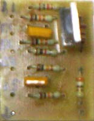
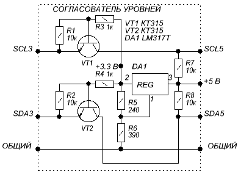
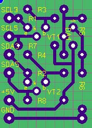

Двунаправленный двухканальный согласователь уровней TTL (0 ... +5 В) и LVTTL (0 ... +3.3 В)

Введение
При совместном использовании узлов на микросхемах ТТЛ (TTL) или КМОП (CMOS) с напряжением питания +5 В и микросхемах TTL или CMOS с пониженным напряжением питания (Low voltage TTL, LVTTL, Low voltage CMOS, LVCMOS) +3.3 В или ниже в ряде случаев возникает необходимость согласования их логических входов и выходов, так как не каждая микросхема LVTTL или LVCMOS толерантна к высоким уровням напряжения + 5 В. В общем случае устройство согласования должно пропускать сигналы в обоих направлениях, обеспечивая на каждой стороне требуемые уровни напряжения и соответствующие друг другу логические уровни (прямой режим работы).
Схема электрическая принципиальная
Двунаправленный двухканальный согласователь уровней TTL-LVTTL разработан применительно к передаче данных по шине I2C (сигналы SCL и SDA). Каждый канал построен по идентичной схеме на биполярном n-p-n транзисторе (VT1, VT2). Так как не всегда имеется возможность подключиться к источнику питания +3.3 В, в устройстве использован собственный стабилизатор напряжения DA1 (LM317T), выходное напряжение которого задается резисторами R5, R6. На контактах SCL3, SDA3 присутствуют логические уровни LVTTL (0 ... +3.3 В), на контактах SCL5, SDA5 - TTL (0 ... +5 В). При необходимости число каналов согласователя может быть увеличено. Если узел с микросхемами LVTTL имеет другое напряжение питания, то необходимо выставить такое же напряжение на выходе стабилизатора DA1 подбором резистора R6. Если есть возможность использования внешнего напряжения +3.3 В, узел DA1R5R6 можно исключить, а внешнее питание подать на точку соединения резисторов R3, R4 (+3.3 В). Работу устройства можно рассмотреть на примере одного канала на транзисторе VT1. Когда на входе SCL3 присутствует высокий уровень сигнала LVTTL +3.3 В, транзистор VT1 заперт, и выход SCL5 подтянут резистором R7 к высокому уровню сигнала TTL +5 В. Если на вход SCL3 поступает низкий логический уровень, то транзистор VT1 отпирается, и на выходе SCL5 также устанавливается низкий логический уровень. Когда на входе SCL5 выставлен высокий уровень +5 В, то транзистор VT1 работает как эмиттерный повторитель, передавая на выход SCL3 высокий уровень +3.3 В. Нулевой логический уровень на входе SCL5 переводит транзистор в инверсный открытый режим, и на выходе SCL3 устанавливается уровень логического нуля.

Конструкция
Согласователь уровней собран на печатной плате размером 25 х 35 мм2 из одностороннего фольгированного стеклотекстолита. Контакты для удобства подключения выведены на одну сторону печатной платы. Крепеж печатной платы осуществляется пайкой на кросс-плату.

Ссылки:
29.08.2017
Альтернативные источники
энергии
Компьютеры и
Интернет
Магнитные поля
Механотронные системы
Перспективные
разработки
Электроника и технология